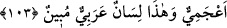

öğrettiklerinden bana öğret.” Rasûlullah (s.a.) de onu, kendisine Kur’an öğretmesi için
bir adama gönderdi. O da ona Zilzâl sûresini sonuna kadar öğretti. “Kim zerre miktarı
hayır yapmışsa onu görür. Kim de zerre miktarı şer işlemişse onu görür.” (ez-Zilzâl,
99/7-8) Âyetlerine gelince adam dedi ki: “Bu bana yeter.” Bu durum Hz. Peygamber
(s.a.)’e haber verilince: “Onu bırakın. Zira adam anlayış sâhibi oldu.” buyurdu.[203]
Şeyh Sa‘dî (k.s.) der ki:
İlmi ne kadar ki önceden okursun,
Sen de amel yoksa câhilsin.
Ne Muhakkık olur ne ilim sâhibi,
Üzerinde bir nice kitap olan dört ayaklı.
O beyinsizin ne ilmi, ne de haberi vardır,
Ki üzerinde olan odun mu yoksa defter mi?
Yine o şöyle der: Perhizi/zühdü olmayan âlim, meş’ale tutan kör gibidir. Faydasız
yere ömrünü sarf eden kimse ise parasını hiç harcamayıp yabana saçıp telef eden ve
elinde bir şey kalmayan kimseye benzer.
Allah’tan her zaman ve mekanda bizi takvâya ve Kur’an’la amele muvaffak kılmasını
niyaz ederiz.
103. Şüphesiz biz onların: “Kur’ân’ı ona ancak bir insan öğretiyor” dediklerini
biliyoruz. Kendisine nisbet ettikleri şahsın dili yabancıdır. Halbuki bu (Kur’an)
apaçık bir Arapçadır.
“Şüphesiz biz onların:” Mekke kafirlerinin “Kur’ân’ı ona ancak bir insan
öğretiyor” dediklerini biliyoruz.”
Allah Teâlâ, onların söyledikleri şeyleri bildiğini te’kid için “” edatıyla zikretmiştir.
Bu bilginin te’kidi, onlara vaadini ve azabıyla tehdidinin (vaîd) te’kidine götürür.
İmam Vâhidî, Esbâbü’n-nüzûl’de şöyle der: Ubeyd b. Mesleme’nin şöyle dediği
rivâyet edilmiştir: Aynu’t-temr ahalisinden işleri kılıç cilalamak olan Yesar ve Cebr
adlı iki hristiyan kölemiz vardı. Kendi dilleri ile bir kitap okurlardı. Rasûlullah (s.a.)
onlara uğrar ve okuduklarını dinlerdi. Müşrikler, Muhammed onlardan öğreniyor
dediler. Bunun üzerine Allah Teâlâ bu âyeti indirdi ve onları yalanladı. Dolayısıyla
âyetteki “insan” ile kastedilen bu iki köledir.
“Kendisine nisbet ettikleri şahsın dili yabancıdır.” Yâni sözü istikametten çevirerek